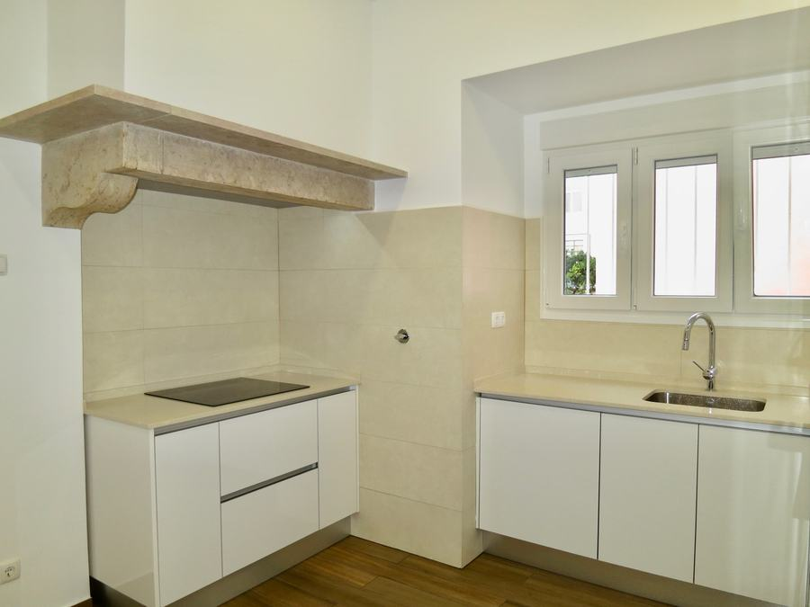
01Remodelações
Casa, escritório ou espaço de negócio, de uma ponta à outra. Canalização, electricidade, carpintaria e serralharia com a mesma equipa.
Desde 1963 · Areeiro, Lisboa · Piquete 24 horas
Fazemos tudo o que a sua casa precisa, desde mudar uma lâmpada à remodelação total. Electricidade, canalização, gás, pintura e fachadas, em casa, na loja ou no condomínio.
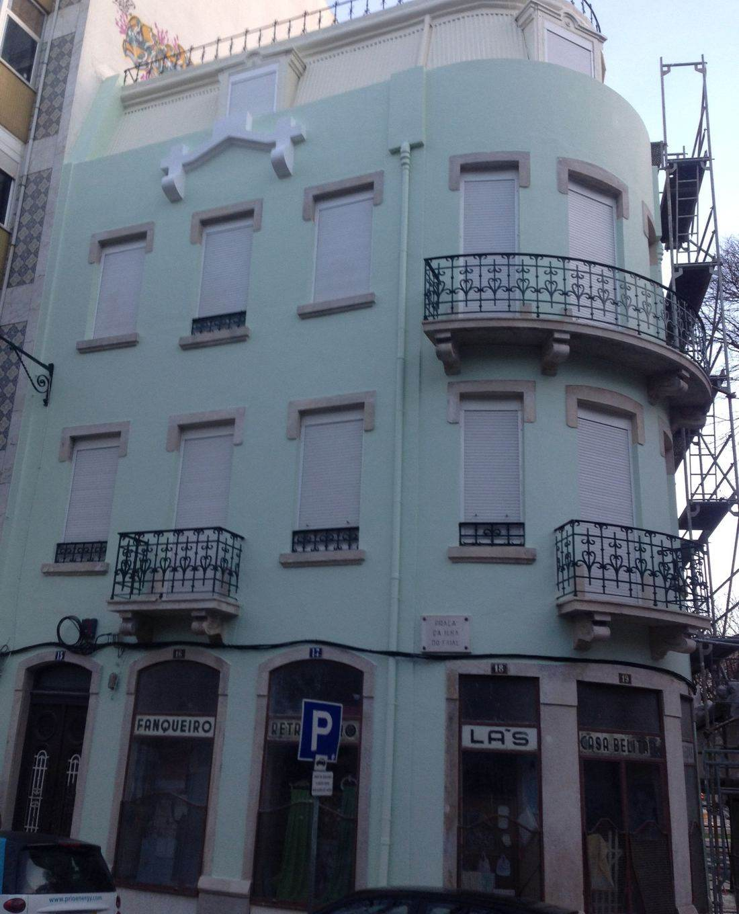
O alvará confirma-se no registo público do IMPIC.
01 · O que fazemos
A mesma casa trata da remodelação completa, do prédio por fora e da avaria que não pode esperar até amanhã.

01Casa, escritório ou espaço de negócio, de uma ponta à outra. Canalização, electricidade, carpintaria e serralharia com a mesma equipa.
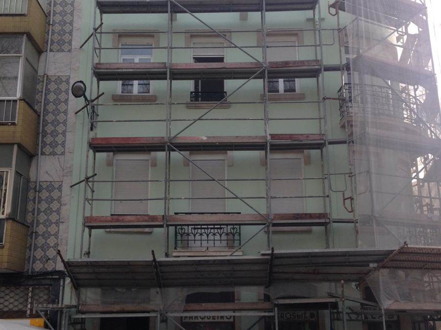
02Fachadas, andaimes, isolamento de terraço, telhado e cobertura. Para administrações de condomínio e para quem tem a obra em assembleia.
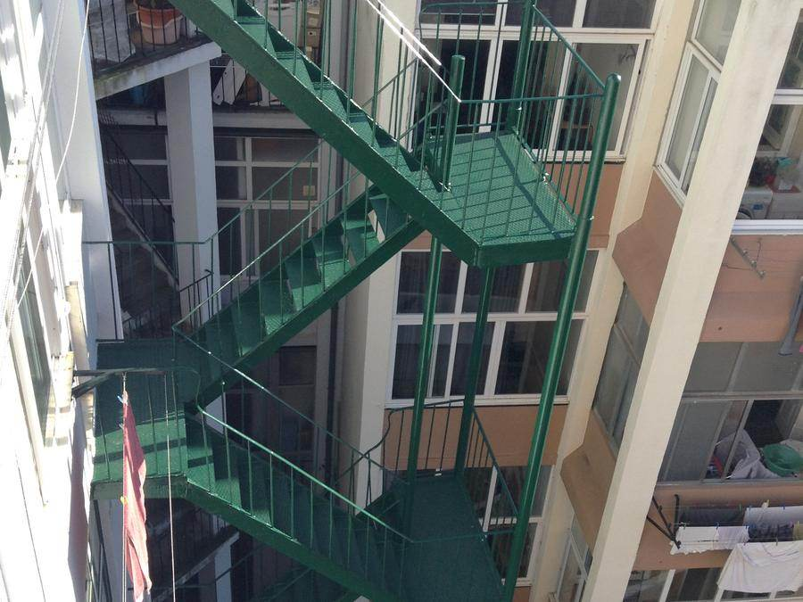
03Escadas de serviço de ferro raspadas e pintadas, e outros trabalhos de serralharia.
02 · A equipa fixa
A Alonso Obras tem uma equipa fixa capaz de tratar da totalidade da remodelação do seu edifício.
03 · O mesmo prédio
As duas fotografias são nossas e são do mesmo edifício: uma com os andaimes montados, outra no fim do trabalho.
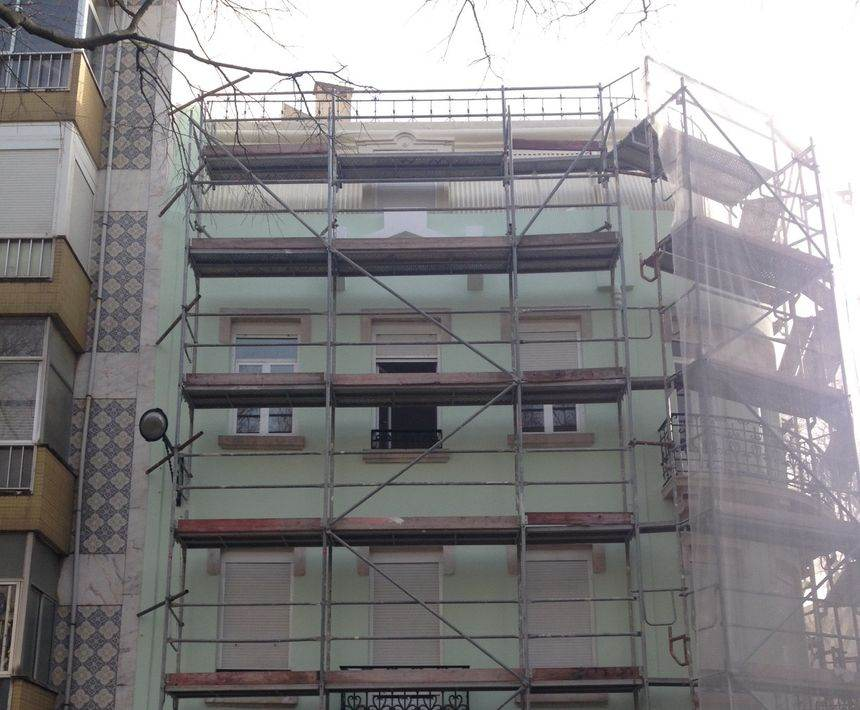
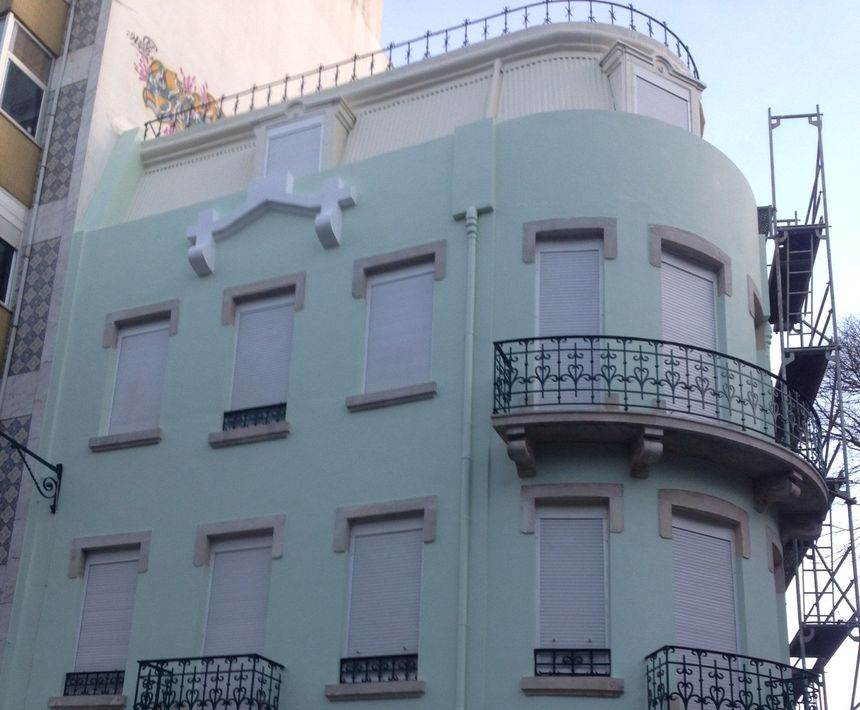
São duas fotografias do mesmo prédio, tiradas de sítios diferentes. Repare na faixa de azulejo que sobe entre este prédio e o vizinho amarelo, à esquerda das duas: é a mesma.
04 · Portefólio
Aqui pode verificar e conferir a qualidade dos nossos trabalhos. Cada obra tem o nome da rua onde foi feita.
A rua começa a menos de cem metros da nossa porta. Cozinha nova, portas e rodapés pintados, portadas de madeira restauradas.
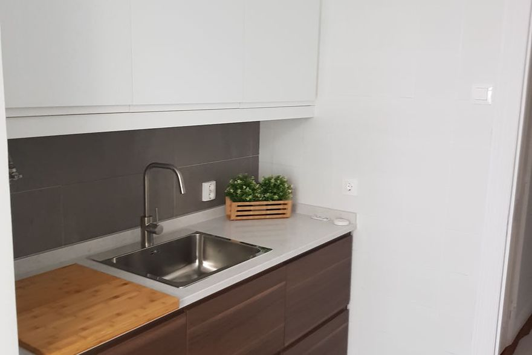
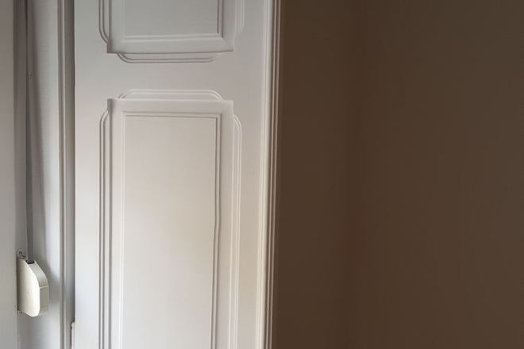
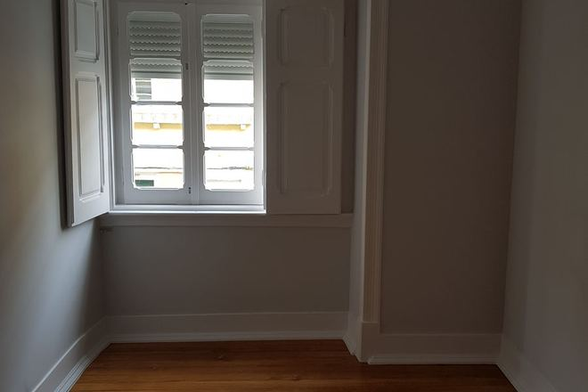
Remodelação completa de um apartamento: cozinha com exaustor em pedra, casa de banho nova e forno encastrado.
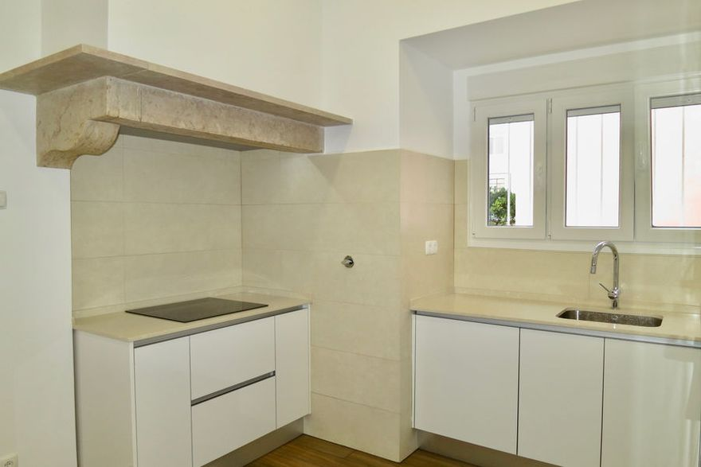
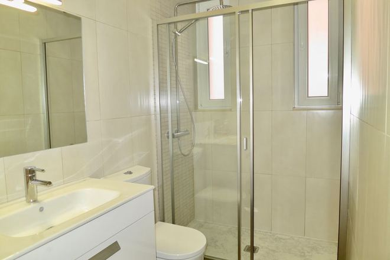
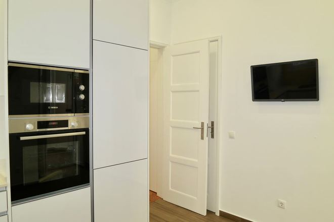
Móvel de casa de banho em madeira feito por medida, cozinha com torneira extensível e soalho assente de novo.
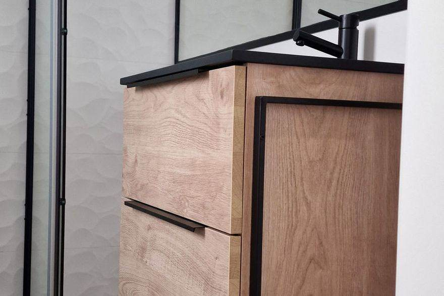
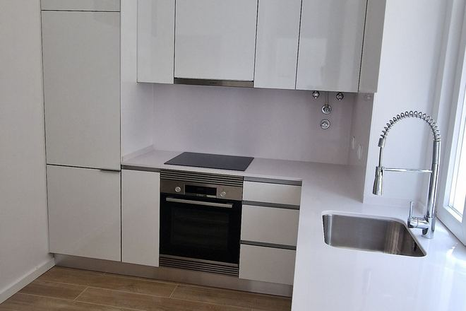
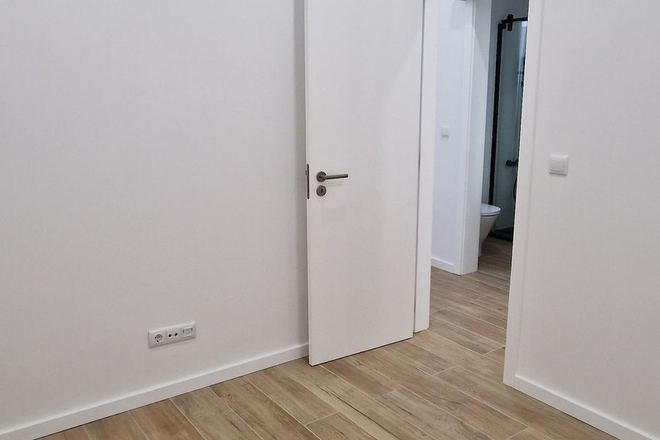
Cozinha branca com placa e forno, zona de lavandaria e o soalho de pinho antigo restaurado em vez de substituído.
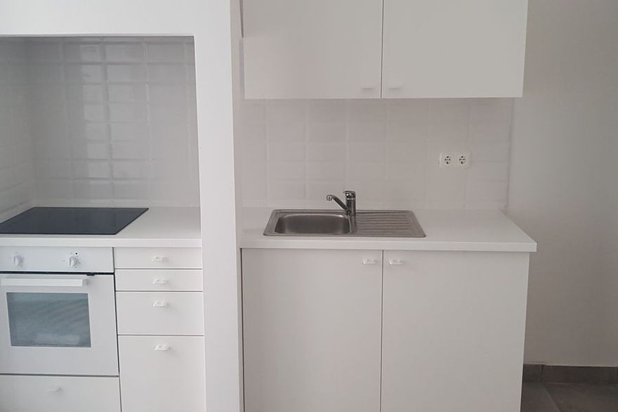
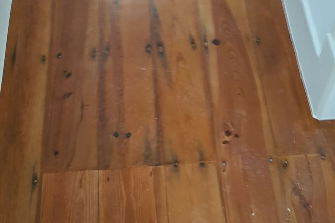
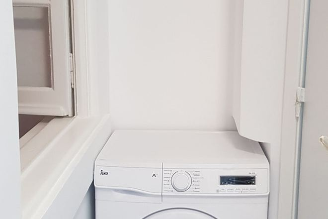
05 · Lista completa
Desviamos os móveis e cobrimos tudo com o máximo de cuidado. Nos esgotos fazemos pesquisa com câmara de vídeo com gravação, alta pressão e máquinas com espirais rotativas.
06 · Piquete 24 horas
Esta folha foi feita para imprimir e ficar no frigorífico.
Feche a torneira de segurança antes de mais nada. Costuma estar por baixo do lava-loiça ou à entrada da casa de banho. Depois ligue-nos.
Não acenda a luz nem carregue em interruptores. Abra as janelas, feche a torneira do contador e saia de casa. Já na rua, ligue para o 112 e depois para nós.
Veja o quadro. Se o disjuntor geral caiu, levante-o uma vez. Se voltar a cair, não insista: há um problema em baixo e é melhor irmos nós.
929 438 452 Custo de chamada para a rede móvel nacional.
Alonso Obras · Alvará IMPIC n.º 82585, classe 2 · geral@electroalonso.com · Rua Actriz Virgínia, 22 B, 1900-027 Lisboa
07 · A casa
1963Primeiro como Electro Alonso, hoje Alonso Obras
A Electro Alonso é uma empresa criada em 1963 no Bairro dos Actores, no Areeiro. Inicialmente, realizava apenas serviços de eletricidade e com o passar dos anos é que se foi especializando na área dos serviços de multiassistência e nas remodelações e reabilitações de edifícios, apartamentos e lojas, fazendo face às necessidades do bairro. Assim, para abranger os serviços realizados passou a ter o nome comercial de Alonso Obras.
Electro Alonso é o nome da firma. Alonso Obras é o nome comercial. É a mesma casa. Alvará IMPIC n.º 82585, classe 2 · NIF 500 453 160 · corpo técnico especializado, habilitado e credenciado.
08 · Falar connosco
Linha permanente 24 horas · custo de chamada para a rede móvel nacional
Custo de chamada para a rede fixa nacional
Alonso Obras · Rua Actriz Virgínia, 22 B
Planta desenhada com dados © colaboradores do OpenStreetMap.
Cozinha com armários castanhos, bancada clara e lava-loiça de encastrar
FecharPorta e rodapé pintados de branco
FecharJanela com portadas de madeira restauradas e soalho novo
FecharCozinha remodelada com exaustor em pedra sobre a placa
FecharCasa de banho com móvel, sanita e duche com resguardo de vidro
FecharColuna de forno e micro-ondas encastrados em armário branco
FecharMóvel de casa de banho em madeira com estrutura preta
FecharCozinha com forno encastrado, placa e torneira extensível
FecharPorta branca nova aberta sobre soalho claro
FecharCozinha branca com placa, forno e lava-loiça
FecharSoalho de pinho antigo restaurado, com os nós da madeira à vista
FecharZona de lavandaria com máquina de lavar encastrada
FecharO prédio da Praça da Ilha do Faial com os andaimes montados, durante a obra de fachada
FecharO mesmo prédio no fim da obra, com a fachada recuperada e pintada e as varandas de ferro tratadas
FecharCozinha remodelada com exaustor em pedra e bancada clara
FecharPrédio com andaimes montados durante uma obra de fachada
FecharEscadas de serviço em ferro, raspadas e pintadas de verde
Fechar